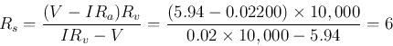

Example 0:

The voltage measured by a voltmeter is (voltage divider):
It is desireable for to be as large as possible (ideally infinity) so
that it draws little current from the source (causing little voltage drop
across the internal resistance  ), for the measureed voltage to be
close to the true open-circuit voltage , i.e., the source .
), for the measureed voltage to be
close to the true open-circuit voltage , i.e., the source .
The current measured by an ammeter is:
It is desireable for  to be as small as possible (ideally zero)
so that the measured current is close to true short-circuit current
.
to be as small as possible (ideally zero)
so that the measured current is close to true short-circuit current
.
When and , the true and can be found by
solving these equations:
solving these we get:
Given the specific values, we get
From these measurement, the true and can be obtained as:

Method verified.